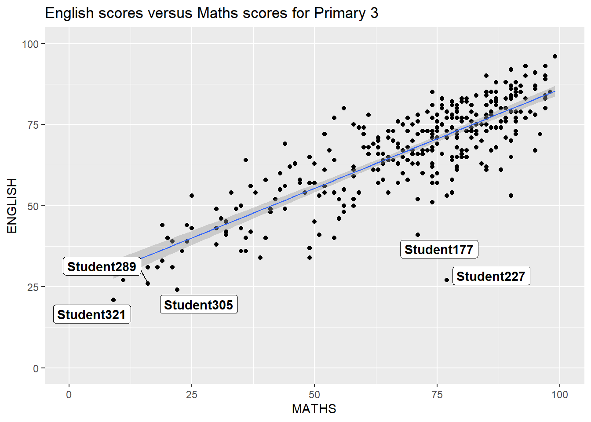
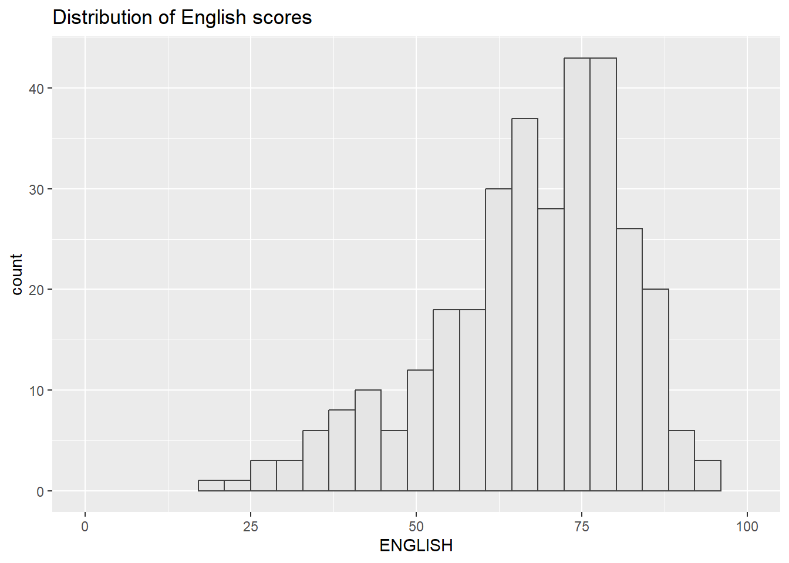

pacman::p_load(ggrepel, patchwork,
ggthemes, hrbrthemes,
tidyverse) Hands-on Exercise 2: Beyond ggplot2 Fundamentals
Learning Objectives
In this chapter, I will delve into various ggplot2 extensions, including the tools to craft more sophisticated and impactful statistical graphics. The goals of this exercise is to:
control the placement of annotation on a graph by using functions provided in ggrepel package,
create professional publication quality figure by using functions provided in ggthemes and hrbrthemes packages,
plot composite figure by combining ggplot2 graphs by using patchwork package.
Getting Started
Installing and importing R packages
In this exercise, beside tidyverse, four R packages will be used. They are:
| ggrepel | provides geoms for ggplot2 to repel overlapping text labels. |
| ggthemes | provides some extra themes, geoms, and scales for ‘ggplot2’. |
| hrbrthemes | provides typography-centric themes and theme components for ggplot2. |
| patchwork | for preparing composite figure created using ggplot2. |
Importing the data
In this exercise, I will work with a file named Exam_data. This file contains the year-end examination grades of a group of primary 3 students from a local school, and it’s saved in a format called CSV. To bring this data into R, we use a piece of code. This code uses a function called read_csv() from a package called readr, which is part of a collection of packages known as tidyverse.
exam_data <- read_csv("data/Exam_data.csv")Rows: 322 Columns: 7
── Column specification ────────────────────────────────────────────────────────
Delimiter: ","
chr (4): ID, CLASS, GENDER, RACE
dbl (3): ENGLISH, MATHS, SCIENCE
ℹ Use `spec()` to retrieve the full column specification for this data.
ℹ Specify the column types or set `show_col_types = FALSE` to quiet this message.There are a total of seven attributes in the exam_data tibble data frame.
| Categorical Attributes |
|---|
| ID |
| CLASS |
| GENDER |
| RACE |
| Continuous Attributes |
|---|
| MATHS |
| ENGLISH |
| SCIENCE |
Beyond ggplot2 Annotation: ggrepel
Warning: Using `size` aesthetic for lines was deprecated in ggplot2 3.4.0.
ℹ Please use `linewidth` instead.`geom_smooth()` using formula = 'y ~ x'
ggplot(data=exam_data,
aes(x= MATHS,
y=ENGLISH)) +
geom_point() +
geom_smooth(method=lm,
size=0.5) +
geom_label(aes(label = ID),
hjust = .5,
vjust = -.5) +
coord_cartesian(xlim=c(0,100),
ylim=c(0,100)) +
ggtitle("English scores versus Maths scores for Primary 3")ggrepel is an extension of ggplot2 package which provides geoms for ggplot2 to repel overlapping text as shown above.
Using ggrepel
By replacing the following:
geom_text() with geom_text_repel(), and
geom_label() with geom_label_repel(),
visualization is clearer.
`geom_smooth()` using formula = 'y ~ x'Warning: ggrepel: 317 unlabeled data points (too many overlaps). Consider
increasing max.overlaps
ggplot(data=exam_data,
aes(x= MATHS,
y=ENGLISH)) +
geom_point() +
geom_smooth(method=lm,
size=0.5) +
geom_label_repel(aes(label = ID),
fontface = "bold") +
coord_cartesian(xlim=c(0,100),
ylim=c(0,100)) +
ggtitle("English scores versus Maths scores for Primary 3")Beyond ggplot2 Themes
ggplot2 comes with 8 built-in themes which are:
|
|
|
|
|
|
|
|
This link provides more information about this. The graph and code chunk below shows the visualization in theme_gray().

ggplot(data=exam_data,
aes(x = MATHS)) +
geom_histogram(bins=20,
boundary = 100,
color="grey25",
fill="grey90") +
theme_gray() +
ggtitle("Distribution of Maths scores") Working with ggtheme package
ggthemes provide ’ggplot2’ themes that replicate the look of plots by Edward Tufte, Stephen Few, Fivethirtyeight, The Economist, 'Stata', 'Excel', and The Wall Street Journal, among others.
In the example below, The Economist theme is used. It also provides some extra geoms and scales for 'ggplot2'. Consult this vignette to learn more.

ggplot(data=exam_data,
aes(x = MATHS)) +
geom_histogram(bins=20,
boundary = 100,
color="grey25",
fill="grey90") +
ggtitle("Distribution of Maths scores") +
theme_economist()Working with hrbthems package
The hrbrthemes package offers a foundational design for graphics that pays attention to text-related elements, like where labels are positioned and the choice of fonts. In simpler terms, it provides a style template for your plots with a focus on how text looks and where it is located on the graph.

ggplot(data=exam_data,
aes(x = MATHS)) +
geom_histogram(bins=20,
boundary = 100,
color="grey25",
fill="grey90") +
ggtitle("Distribution of Maths scores") +
theme_ipsum()The second objective is all about making work more efficient in a production workflow. Essentially, the context for using the elements of hrbrthemes is within this workflow, where you’re creating and producing things. In the next code chunk, the following will be done:
axis_title_size argument is used to increase the font size of the axis title to 18,
base_size argument is used to increase the default axis label to 15, and
grid argument is used to remove the x-axis grid lines.

ggplot(data=exam_data,
aes(x = MATHS)) +
geom_histogram(bins=20,
boundary = 100,
color="grey25",
fill="grey90") +
ggtitle("Distribution of Maths scores") +
theme_ipsum(axis_title_size = 18,
base_size = 15,
grid = "Y")Beyond Single Graph
It’s common to need multiple graphs to convey a compelling visual narrative. Various ggplot2 extensions offer tools to put together a figure with multiple graphs. In this part, I will show how a combined plot is made by bringing together three statistical graphics.
- First:
p1 <- ggplot(data=exam_data,
aes(x = MATHS)) +
geom_histogram(bins=20,
boundary = 100,
color="grey25",
fill="grey90") +
coord_cartesian(xlim=c(0,100)) +
ggtitle("Distribution of Maths scores")
p1
p1 <- ggplot(data=exam_data,
aes(x = MATHS)) +
geom_histogram(bins=20,
boundary = 100,
color="grey25",
fill="grey90") +
coord_cartesian(xlim=c(0,100)) +
ggtitle("Distribution of Maths scores")- Second:

p2 <- ggplot(data=exam_data,
aes(x = ENGLISH)) +
geom_histogram(bins=20,
boundary = 100,
color="grey25",
fill="grey90") +
coord_cartesian(xlim=c(0,100)) +
ggtitle("Distribution of English scores")- Lastly, a scatterplot for English score versus Maths score:
`geom_smooth()` using formula = 'y ~ x'
p3 <- ggplot(data=exam_data,
aes(x= MATHS,
y=ENGLISH)) +
geom_point() +
geom_smooth(method=lm,
size=0.5) +
coord_cartesian(xlim=c(0,100),
ylim=c(0,100)) +
ggtitle("English scores versus Maths scores for Primary 3")Creating Composite Graphics: pathwork methods
Several functions in ggplot2 extensions help prepare composite figures by combining multiple graphs. Examples include `grid.arrange()` in the gridExtra package and `plot_grid()` in the cowplot package. In this section, an introduction to a ggplot2 extension called patchwork, specifically designed for merging separate ggplot2 graphs into a single figure, will be shown.
The patchwork package has a straightforward syntax for creating layouts, which can easily make:
A two-column layout using the plus sign `+`.
Subplot groups using parentheses `()`.
A two-row layout using the division sign `/`.
Combining two ggplot2 graphs

p1 + p2Combining three ggplot2 graphs
More complex composite figures can be created by using suitable operators. For instance, the composite figure below is plotted using the following operators:
- The “|” operator to stack two ggplot2 graphs.
- The “/” operator to place the plots beside each other.
- The “()” operator to define the sequence of the plotting.
This link provides more information.
`geom_smooth()` using formula = 'y ~ x'
(p1 / p2) | p3Creating a composite figure with tag
In order to identify subplots in text, patchwork also provides auto-tagging capabilities as shown in the figure below.
`geom_smooth()` using formula = 'y ~ x'
((p1 / p2) | p3) +
plot_annotation(tag_levels = 'I')Creating figure with insert
Beside providing functions to place plots next to each other based on the provided layout. With inset_element() of patchwork, one or several plots or graphic elements can be placed freely on top or below another plot.
`geom_smooth()` using formula = 'y ~ x'
p3 + inset_element(p2,
left = 0.02,
bottom = 0.7,
right = 0.5,
top = 1)Creating a composite figure by using patchwork and ggtheme
The figure below is created by combining patchwork and theme_economist() of ggthemes package discussed earlier.
`geom_smooth()` using formula = 'y ~ x'
patchwork <- (p1 / p2) | p3
patchwork & theme_economist()